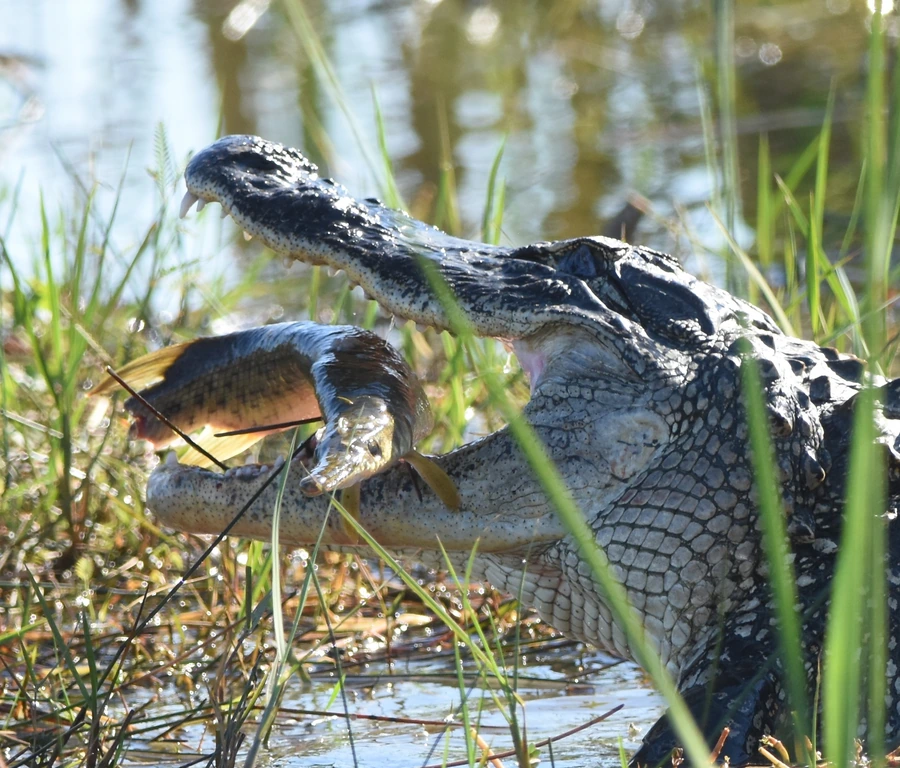

爬行动物 · 动物界
密西西比鳄 Alligator mississippiensis

北美洲特有的大型鳄类，冬季会挖掘洞穴休眠，幼鳄出壳时会发出叫声，美国佛罗里达州数量最多，也是当地湿地的旗舰物种。
- 分类
- 门脊索动物门纲爬行纲目鳄目科短吻鳄科属短吻鳄属
- 栖息环境
- 北美东南部的沼泽、河流、湖泊与河口湿地
- 地理分布
- 美国东南部及墨西哥东北部
- 保护级别
- IUCN 无危（LC）；CITES 附录 II；非中国原产
物种志
密西西比鳄体长 3–4.5 米，雄性明显大于雌性，吻部宽而圆钝，背面呈暗绿至黑色，幼体带有黄色横斑，腹面淡黄，四肢粗壮有力。它只分布在北美东南部，从美国卡罗来纳州到得克萨斯州以及墨西哥东北部，栖息于沼泽、河流、湖泊与河口湿地。
它以鱼类、龟、鸟类、浣熊等为食，捕食时善于伏击；冬季会在泥岸挖掘洞穴进入休眠，以度过寒冷季节。每年 4–6 月交配，雌鳄用植物堆筑巢丘，产卵约 20–50 枚，孵化期 60–70 天，巢温决定幼鳄性别，母鳄会守护巢穴。20 世纪因皮革贸易和栖息地破坏，其数量一度锐减，后经保护措施恢复，现被列为无危物种，是美国南部湿地生态系统的旗舰物种。
形态与习性
- 食性鱼类、龟、鸟类和小型哺乳动物
- 体长3–4.5 m
- 体重雄性可达 450 kg
- 寿命约 50 年，圈养可更久
- 繁殖卵生，每窝 20–50 枚，孵化 60–70 天
- 活动节律夜行性，冬季掘洞休眠
- 特点巢温决定幼鳄性别，母鳄护巢
趣味知识
- 密西西比鳄是北美最大的爬行动物，美国佛罗里达州是其核心分布区。
- 冬季它会在泥岸挖洞休眠，以躲避低温。
- 20 世纪的保护措施使密西西比鳄从濒危中恢复，成为保护成功的经典例子。